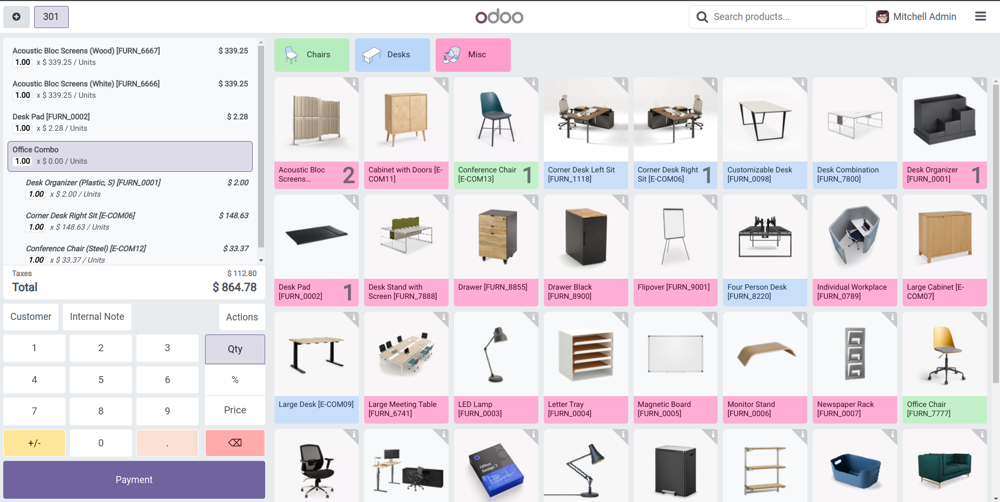
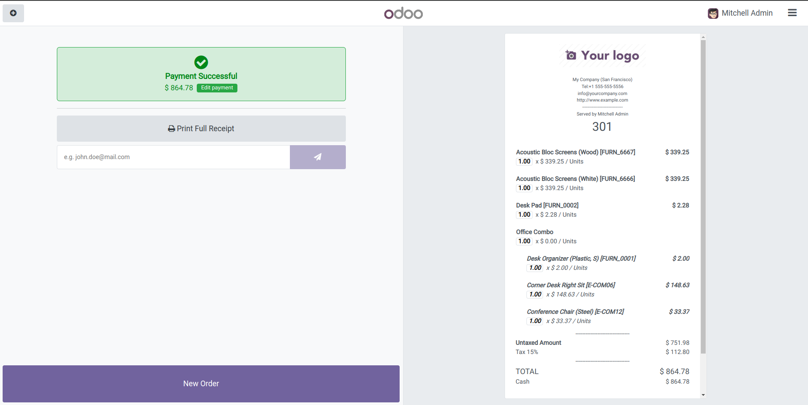

The POS Internal References module is designed to optimize your Point of Sale (POS) system by integrating internal references across critical areas. This functionality enhances product tracking, inventory management, and transaction accuracy, making it an essential tool for streamlined POS operations.
Receipt Updates
Receipts generated by the POS system now include internal references for each purchased item. This addition provides clear identifiers on sales receipts, making returns, exchanges, and warranty claims more straightforward and effective. Enhanced receipt details ensure better customer service and efficient post-sale processing.
Product Screen Integration
The Product Screen now includes an "Internal Reference" field. This feature allows users to assign unique internal identifiers to each product, improving product identification and inventory management. Internal references make it easier to track products from the inventory to the sale, ensuring accurate stock levels and facilitating efficient stock management.
Order Line Enhancement
The Order Line section displays internal references alongside each product during transactions. This integration ensures precise order tracking and reduces errors by providing a clear and unique identifier for each item. This feature supports accurate sales processing and simplifies order verification.

Receipt Updates
Receipts generated by the POS system now include internal references for each purchased item. This addition provides clear identifiers on sales receipts, making returns, exchanges, and warranty claims more straightforward and effective. Enhanced receipt details ensure better customer service and efficient post-sale processing.

Is there anything I can assist you with?
For any inquiries, assistance, or suggestions for new features, please feel free to reach out to us via email. askbytetechnolab@gmail.com